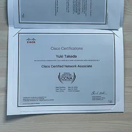
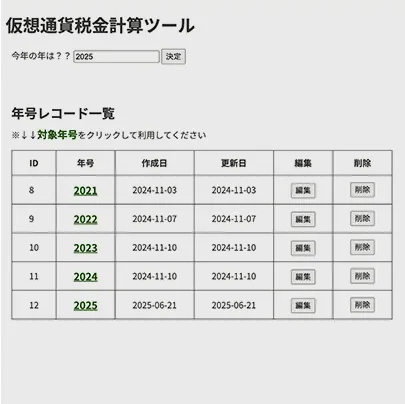
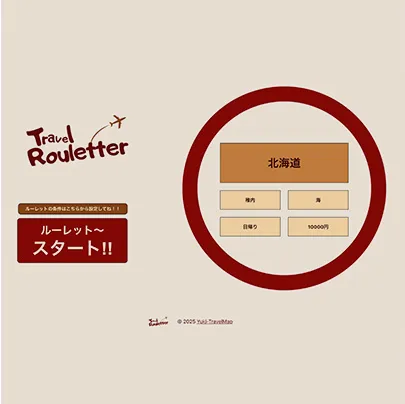
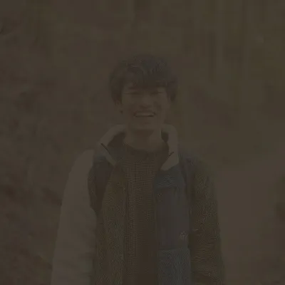
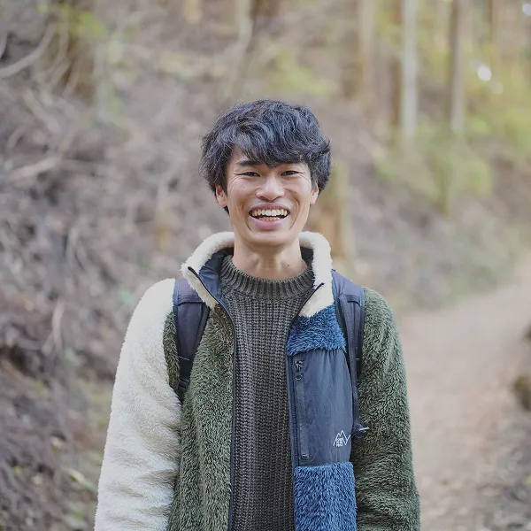
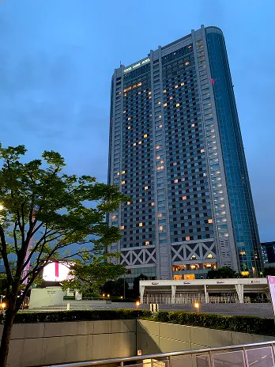
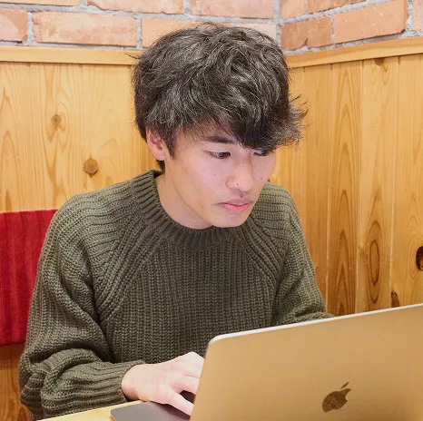
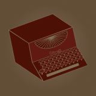

私について
About
Me
人生も、デザインも、旅だと思います。
竹田 侑生Yuki Takeda
1995年生まれ、東京都江戸川区出身、現在は神奈川県の横浜在住です。
趣味は何よりも旅が大好きです。海外も国内も好きで、行ったことある国の数は14カ国です。見たいスポットのためであれば往復6時間でも歩けます。そのくらい歩くのが大好きです。シドニーの日本食レストランでアルバイトをした際、交通費節約のため2ヶ月間、片道1時間30分かけてオペラハウスを見ながらハーバーブリッジを渡り、通っていたことは今でも思い出です。
普段はコーヒーを飲むことが好きです。私にとってコーヒーは仕事や学習のモチベーション向上、疲れを癒してくれたりといつの間にか必需品になってしまいました。
トルコで往復6時間かけて見に行ったラクダ岩
オーストラリアでアルバイトのため、2ヶ月間渡り続けたハーバーブリッジ
心から求められ・
喜ばれ・感謝される
デザインを追求したいです。
2021年にホテル業界からIT業界入りし、自分が本当にやりたいことはいったい何だろう？とずっと模索してきました。今までの私の人生経験で気づいたことは「モノづくりが好き」「人から喜ばれる、貢献することが好き」です。人の役に立つモノをたくさん作り、心から喜ばれるものを追求でき、自己成長にも繋がる、そんな素晴らしいものはこれしかない！と思えたものが私にとってデザインでした。私は「デザインと旅で生きていく！」と心に決めました。そこで2025年1月より、3年間「ここに行く！」とずっと決めていた『デジタルハリウッドSTUDIO by LIG』へ入学し、私のデザイン学習がスタートしました。
デザインを本格的に勉強しはじめて「デザインは本当に奥が深くて面白い！」と感じております。学習にのめり込めば込むほど新たな発見や学び、今までできていなかったことなどが無限に現れます。街中を歩けば未知のデザインに遭遇し、デザイン要素を自分のものにできる。まるでデザインも旅をしているのと同じだと気付きました。
これから沢山の大きな壁や険しい道に遭遇すると思います。全てを楽しさ・やりがいに変換し、いち早く人から求められる・喜ばれる・感謝されるデザイナーになる為、デザインという旅にでたいと思います。
私の強み
-
01継続力
私は目標を設定し、達成に向けて継続することが得意です。自己成長のために努力することが楽しくて仕方ありません。
2021年9月、SES企業を通じてIT業界入りし、約4年間1度も学習を止めたことがありません。2021〜2022年はインフラエンジニアの学習に励み、ネットワークやAWS資格を3つ取得し、現場で活かすことができました。2023年〜2024年は開発エンジニアの基礎理解のため、バックエンド・フロントエンドを独学で学び、それぞれ簡単なアプリを作成しました。
2025年から『デジタルハリウッドSTUDIO by LIG』に入校し、デザイン学習に励んでいます。日々新しいことを習得できることにやりがい・楽しさを感じながら、奮闘して学習を続けています。
転職成功後も様々なデザインに挑戦し、新しい発見や採掘をしていきたいです。
  IT業界に入ってから
の学習実績 -
02素直
友人や家族、前職の先輩からの他己評価では、素直と言われることが多いです。
小学生の頃から塾の先生や友人から言われたことを素直に受け入れてしまう傾向にありました。その性格は今でも活かされており、たくさんの新しい発見や学びを得られています。
インフラエンジニアとして現場参画中に長期間の大トラブルが発生し、夜間対応できる人材が不足していた際、積極的に手を挙げて夜間対応にたくさん参加しました。結果、トラブル時の初動対応や動き方の学びに繋がりました。素直に色々な事に挑戦し、アドバイスや意見に寄り添うことで多くの学びや経験を得られます。
私の提案や意見出しももちろん大切にしたいですが、デザイナーとして就職後も相手の意見を大切にし、尊重していきたいです。
  -
03人に喜んでもらう為に努力すること
私が最も大切にしていることは、どうすれば人の役に立ち、感謝され、喜んでもらえるのかを考えて仕事することです。
仕事をしているといつの間にか流れ作業のようになってしまい、何のための作業かを見失ってしまうことがあると思います。私は1つ1つの作業において「何のために行なっているのか」「誰が喜んでくれるのか」を自問自答するようにしています。
例えばホテルの客室サービス課に従事している際、PCトラブルでZoom会議に間に合わないと混乱されているお客様に対し、お飲み物の準備、一旦お客様の上司に連絡してみるなどの提案、解決法を一緒に調べるなど、お客様に寄り添うことに徹した結果、最終的に会議に間に合い、後日お客様からお褒めの言葉をいただきました。
デザイン制作においても、どうしたら見やすく伝わりやすい・ユーザが喜ぶ・課題解決に繋がるかなどを追求し、価値あるデザイン作りをしていきたいです。
 
できること
-
01
デザイン
下記ツールを使用し、バナーやサイト制作を企画からデザインまで一貫して制作可能です。何よりもクライアントやユーザの意見を大切にし、意味のあるデザインを目指して制作しています。バナー制作がまだ未熟であるため、特訓中です。
#Photoshop #Illustrator #Figma
-

02
コーディング
命名規則などコード全体の見やすさや、どのデバイスサイズからでも綺麗に見えるように意識しています。
JavaScriptによるアニメーション実装も可能です。ユーザが操作していて心地よい、分かりやすいと思っていただけるように心がけています。#HTML #CSS #JavaScript
-

03
その他
前職では、業務でGitによるバージョン管理を行っていたため、基本的な操作が可能です。
また、趣味で既存WordPressテーマを使用した旅ブログを運営しており、基礎的なWordPress操作が可能です。現在オリジナルテーマ制作に向けて学習中です。#Git #WordPress
私の人生
20代の私は自分探しの旅をしていました。
大学生の頃はPCが大の苦手で、PC業務メインの会社には入らないと心に誓っていました。しかし、就職したホテルでご縁があり、PCメインの部署に配属されたことでPCの操作が楽しくなり、下記の流れで現在に至ります。
-
2014/3〜2019/4
東京の4年制大学生
英語に憧れ、大学3年生の時に1年間の語学留学（オーストラリア・フィリピン）を経験。その後、某アパレル業界のお店でアルバイトと海外旅行を交互に行い、10カ国以上を歩き回る。
英語を活かすためにホテル業界を目指し、就職活動を行う。 -
2019/4〜2021/8
東京の某ホテル社員
東京にある某ホテルで客室サービスの仕事を経験。
電話、接客、客室全体（1,006室）の管理を行い、お客様が快適に楽しく過ごせるよう業務に励む。
そこでPC業務の楽しさ、素晴らしさを知る。 -
2021/9〜2025/6
横浜のIT企業社員
もっと専門的にPCスキルを磨き、PC1つで人々の役に立ちたいという想いからIT業界に入る。
インフラエンジニアとしてサーバ構築や運用、APIやツールのコード修正、AWSを使用した案件など複数現場を経験。 -
2025/1〜
デザイン学習
IT企業でインフラエンジニアの経験、独学で開発エンジニアの基礎やデザイン基礎の学習を行い、心の底から楽しく今後も続けていきたいと思ったものがデザインだった。
2025年1月に念願の『デジタルハリウッドSTUDIO by LIG』に入校し、デザイン学習に専念する。
2025年9月に卒業し、Web制作会社への転職を目指し活動中。
私のビジョン
-
03Years later
3年後、自分1人でデザインの良し悪しを判断し、ユーザやクライアントの想いを汲み取れるようになりたいです。目標達成のため、チームメンバー、クライアント、ユーザの意見やアドバイスを尊重し、どうすれば喜ばれる価値あるデザインとなるのかを研究していきたいです。また、人生の中で多くのデザインに巡り合います。せっかく巡り合った機会を無駄にしないよう、デザインの良い要素は何か、何が人を魅了させ、課題解決に結びついているのかなど第三者目線で調査し、価値あるデザイン作りのための材料を蓄積していきます。
-
05Years later
5年後、チームメンバー全体の業務内容の理解に努め、プロジェクト全体の効率性アップに繋がる架け橋的な存在になりたいです。目標達成のため、色々なメンバーの業務工程に興味を持ち、難しいポイントやメンバーの気持ちなど様々な豆知識を習得していきたいです。その上、自分の業務においてどのような考慮があればチームメンバーの効率性やチーム全体のパフォーマンス向上に貢献できるかを考え、実行していきたいです。また、様々なデザインや業務に積極的に挑戦し、プロジェクトでできることの幅を広げたいです。
-
10Years later
私は関わる全てのクライアント、利用ユーザ、チームメンバーから求められ、喜ばれ、感謝されるデザイナーになることが目標です。目標達成のためには多くの方々の内面的な理解、気持ちの汲み取りが必要だと思います。そのため、10年後には上流から下流工程までの全てに関わることを目標とし、日々どんな業務でも積極的に参加していきます。3、5年後のビジョンで掲げた目標を10年後も継続し、関わる全ての方より、心から求められ・喜ばれ・感謝されるデザイナーになれるよう、切磋琢磨努力していきたいです。